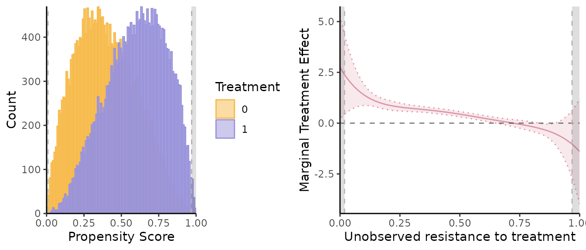
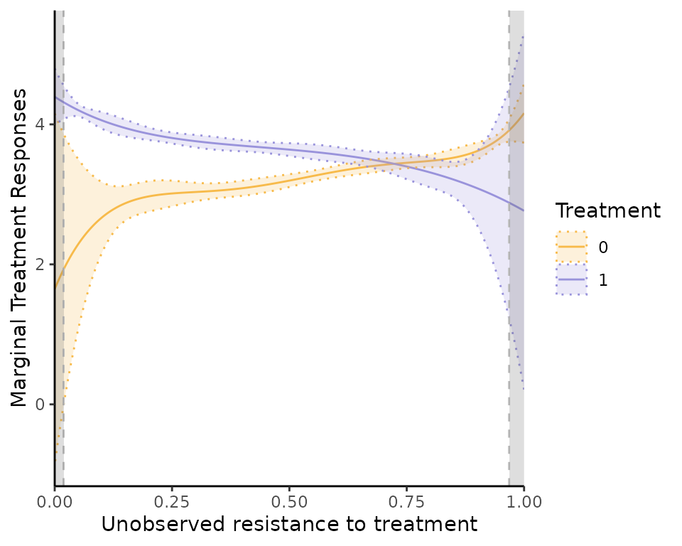
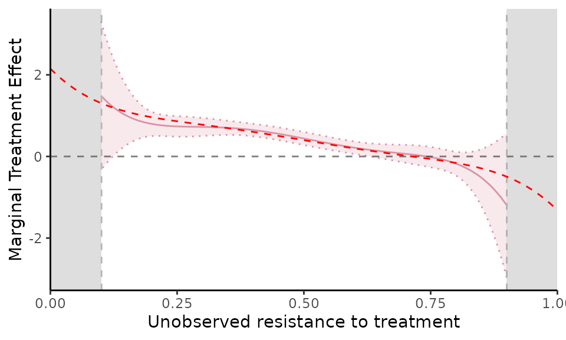
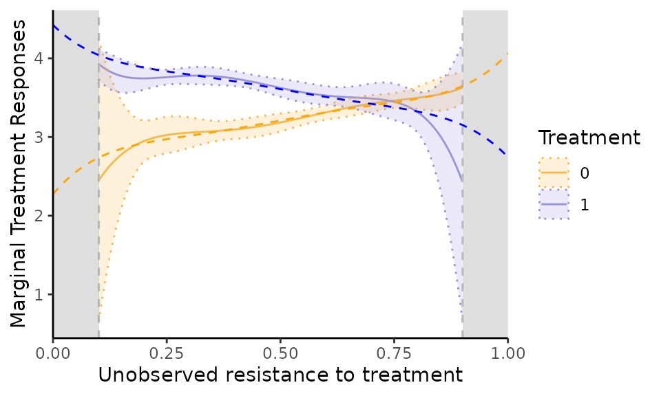

Estimator Performance: general heterogenous treatment effect model
Christophe Bruneel-Zupanc
22-07-2024
semiIVreg_heterogenousTE.RmdLet us compare the performance of the semi-IV estimator in a generalized Roy model with heterogenous treatment effects. The simulation specification comes from Bruneel-Zupanc (2024). It is close to the counterpart standard IV simulated Roy models used in James J. Heckman, Urzua, and Vytlacil (2006) or James J. Heckman and Vytlacil (2007).
Simulating data
We simulate generalized Roy models using the
simul_data()function. See the documentation of the function
for details about the model. Depending on the chosen parameters, we can
simulate a model with homogenous/heterogenous treatment effects, as well
as with valid IVs eventually. That’s what we will do here. In every
simulation we do not include covariates (set all their effect to 0), but
these can be easily included.
Model with Heterogenous Treatment Effects
Simulate data
Let us simulate a generalized Roy model with heterogenous treatment
effects using the simul_data() function.
# Model
library(semiIVreg)
N = 50000; set.seed(1234)
# Specification
model_type = "heterogenous"
param_error = c(1, 1, 0.6, 0.5) # var_u0, var_u1, cov_u0u1, var_cost (the mean cost = constant in D*) # if heterogenous
param_Z = c(0, 0, 0, 0, 1.5, 1.5, 0.9) # meanW0 state0, meanW1 state0, meanW0 state1, meanW1 state1, varW0, varW1, covW0W1
param_p = c(0, -0.7, 0.7, 0, 0, 0) # constant, alphaW0, alphaW1, alphaW0W1, effect of state, effect of parent educ
param_y0 = c(3.2, 0.8, 0, 0) # intercept, effect of Wd, effect of state, effect of parent educ;
param_y1 = c(3.2+0.4, 0.5, 0, 0) # the +0.2 = Average treatment effect; effect of W1, effect of state, effect of parent educ;
param_genX = c(0.4, 0, 2)
data = simul_data(N, model_type, param_y0, param_y1, param_p, param_Z, param_genX, param_error)semi-IV regression
Let us apply directly the semiivreg()function. Compute
the MTE and MTR for a reference individuals with average value of the
semi-IVs, i.e.,
here. Remark: the
depend on
and
,
so always need to pick a reference individual. By default,
semiivreg computes the average individuals (for the
continuous covariates and semi-IVs), and takes the ‘reference level’ for
factor variables.
semiiv = semiivreg(y~d|w0|w1, data, ref_indiv = data.frame(w0=0, w1=0))
Let us report also the marginal treatment responses (MTR):
semiiv$plot$mtr
Trimming the Support:
These seems relatively well estimated, except at the tails where the
common support is not entirely satisfied, while the MTE is only
identified on the common support. If one wants to restrict the
estimation to a given common support, it’s very easy to do in
semiivreg().
semiiv1 = semiivreg(y~d|w0|w1, data,
ref_indiv = data.frame(w0=0, w1=0),
common_supp_trim = c(0.1, 0.90),
plotting=FALSE)
mte_plot = semiiv1$plot$mte; mtr_plot = semiiv1$plot$mtr;
grid.arrange(mtr_plot, mte_plot, ncol=2)Comparison with the truth
Let us compute the ‘true’ underlying MTE (we estimate it using the true unobserved and here, it would be better if we used the known closed form solution instead, but at the margin it’s the same).
# True MTE and MTR estimations
seq_p = seq(0, 1, by=0.001); data$diff = data$y1 - data$y0; pol_degree=5
true_model_mte = lm(diff~w1 + w0 + poly(Ud, pol_degree, raw=TRUE), data); # MTE
true_model_mtr1 = lm(y1 ~w1+poly(Ud, pol_degree, raw=TRUE), data) # MTR1
true_model_mtr0 = lm(y0 ~w0+poly(Ud, pol_degree, raw=TRUE), data) # MTR0
# Compute the values for a given reference individual
newdata = data.frame(Ud=seq_p, w0=0, w1=0)
newdata$true_mte = predict(true_model_mte, newdata);
newdata$true_mtr1 = predict(true_model_mtr1, newdata); newdata$true_mtr0 = predict(true_model_mtr0, newdata)
mte_plot + geom_line(data=newdata, aes(x=Ud, y=true_mte), linetype="dashed", col="red")
mtr_plot + geom_line(data=newdata, aes(x=Ud, y=true_mtr1), linetype="dashed", col="blue") +
geom_line(data=newdata, aes(x=Ud, y=true_mtr0), linetype="dashed", col="orange")
Overall, we see that on the common support, the MTE are very precisely estimated here. But this requires more observation than the estimation of the homogenous treatment effects. Because otherwise, the MTE are not well estimated at the tails of the common support. A solution is just to trim the estimation on the set on which the parameters are well identified then.